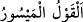
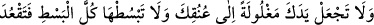
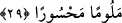

çevirmek zorunda kalırsan, demektir. Burada müsebbeb, sebeb yerine ikame edilmiştir.
Çünkü rızkı yitirmek ve kaybetmek, onu beklemenin sebebidir.
Hz. Peygamber (s.a.)’den bir şey istendiğinde o şey yanında mevcut değilse
hayâsından dolayı susardı. O’na bu durumlarda güzel söz söylemesi emredildi ki onun
susmasından dolayı istekte bulunan kimselere yalnızlık ve gariplik musallat olmasın.
“Hiç olmazsa kendilerine gönül alıcı bir söz söyle.” Onlara kolay ve yumuşak söz
söyle, onlara kolay gelecek ve rahatlatacak vaadlerde bulun. Zâhirî mânâsı “kolay söz”
olan, ve “yumuşak söz” diye terceme edilen “__WORD__ el-Kavlü’l-meysûr”un onlara
kolaylık için duâ etmek olduğu da söylenmiştir. Yâni onlara: “Allah sizi fazlı ve
ihsanıyla zengin kılsın. Allah bizi ve sizi rızıklandırsın.” diye duâ et.
Rivâyet edildiğine göre Îsâ (a.s.) şöyle demiştir: “Kim bir dilenciyi mahrum olarak
kapısından çevirirse melekler onun evine yedi gün uğramazlar. Kim de fakirliğinden
hoşnut olarak ölürse cennete ondan daha zengin olarak hiçbir kimse girmez.” el-
Hâlisa’da böyle geçmektedir.
29. Eli sıkı olma; büsbütün eli açık da olma. Sonra kınanır, (kaybettiklerinin)
hasretini çeker durursun.
“Eli sıkı olma; büsbütün eli açık da olma.” Âyette eli sıkı olmak, eli boynuna
bağlamak olarak ifâde edilmiştir ki cimrilikten kinâyedir. ‘Büsbütün eli açık da olma’
ifâdesi ise isrâf etme demektir. Müfessirler bu iki ifâdenin cimrinin cimriliği ve
müsrifin savurganlığına temsil olduğunu söylerler. Bu, her ikisini de yaptıklarından
dolayı kınamak ve cimrilikle israf arasındaki iktisâda sevk etmek içindir. İktisad ise
israf ile cimrilik arasında bir şey olup kerem ve cömertlik bundan ibarettir.
Elleri boynuna bağlı olduğu için hiçbir şey vermeye gücü yetmeyen kimse gibi son
derece cimri davranarak hak yolda infak etmekten kaçınma. Elini sonuna kadar açıp
elinde hiçbir şey kalmayan kimse gibi son derece cömert davranıp da yanında hiçbir şey
kalmayacak kadar elindekilerin tamamını da verme. “Sonra” cimrilik yaptığın takdirde
Allah nezdinde ve insanlar arasında, hem dünyada hem de âhirette “kınanır,” isrâfa
varacak şekilde elin açık davrandığında ise elinde hiçbir şey kalmaz ve kaybettiklerinin
“hasretini çeker durursun.” Pişman olursun.
Cimrilikten elini boynuna bağlama
Çünkü vakar ehli yanında bu haslet iyi değildir
Yine israf tarafına o kadar meyletme
Ki ne varsa bir nefeste elinden çıkarıverme